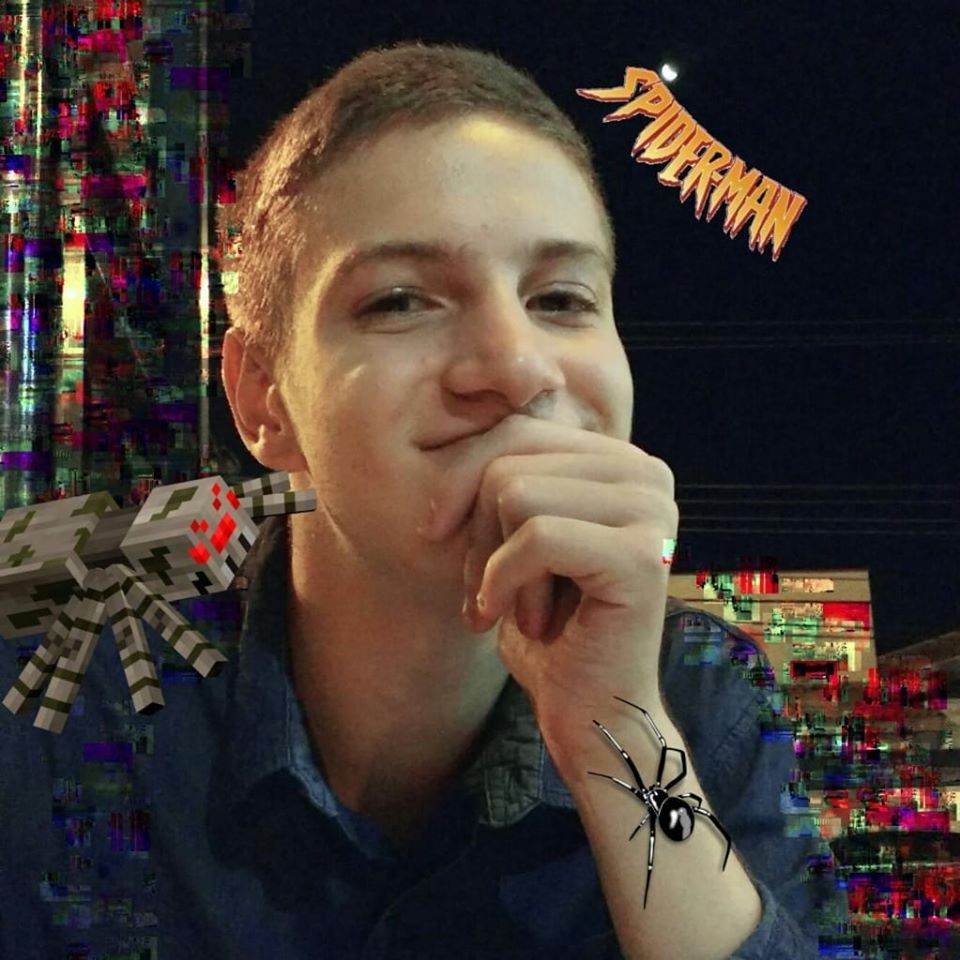

Ariel Francisco
@darthvilha
Um Jovem Sonhador:
- Ama Escrever
- Ama Jogar LoL,RPG & Magic
- Ama Cinema
- Apaixonado por Leitura
- Super-Fã de Naruto, SCP´s e D&D
A ideia para está página surgiu através de um projeto na Faculdade. Uma Página para dar um pouco de apoio para aqueles que amam RPG,
que amam este mundo de imaginação e aventuras.
Sobre o Autor:
Nasceu no dia 18 de Novembro de 1999 em São Paulo, Brasil. Em sua infância, amava desenhar, pintar, escrever e brincar, tudo que
era relacionado ao meio artístico o admirava. Se apaixonou por cinema, música, animações, quadrinhos e outros. Conheceu o RPG, passou
a escrever histórias, poemas e narrativas. Cria Poesias admiráveis, Mundos Fantasiosos. Seu nome, é Ariel, alguns o chamam de Ari, Arielito,
às vezes, se auto-proclama como Leira.
Aqui vai um de seus Poemas:
'Será que somos os certos?'
Nós somos os seres inteligentes,
Conquistamos tudo que há em nossas frentes.
Por sermos os espertos,
Será que tudo que fazemos é o certo? –(O que fazemos é o certo?)
O planeta é a nossa grande casa,
E tudo que se move, vira caça.
É certo de que o nosso futuro é incerto,
Será que está casa ainda será o nosso teto?
Em uma grande máquina somos uma ferramenta,
Aos poucos nós a mudamos e evoluímos,
Porém nós a destruímos.